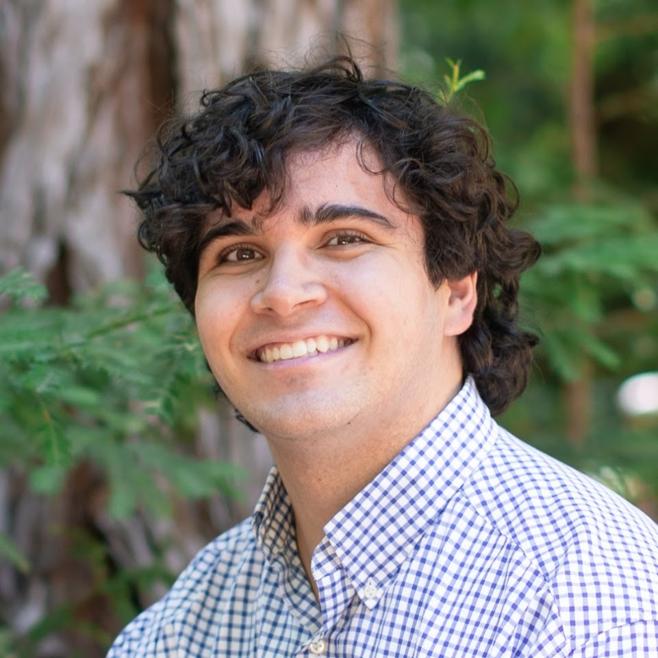

Sam Stowers
Systems & Kernel Researcher | MS Computer Science, Syracuse University
I am a researcher focused on Linux kernel development, KVM virtualization, and lock contention within concurrent applications with an accelerated completion of a combined BS/MS in Computer Science in just 4 years at Syracuse University. I graduated with a 4.0 GPA in my Master's program and Summa Cum Laude in my undergraduate degree.
Research Interests
Seeking PhD opportunities focused on systems software and kernel architecture. My research centers on bridging low-level hardware abstractions with runtime OS efficiency to build scalable, predictable, and contention-resilient infrastructure.
OS and hardware co-design
Rethinking system interfaces and low-level kernel abstractions for modern architectural features. Exploring hardware extensions, cache and memory-tiering topologies, heterogeneous systems, and disaggregated computing to enable secure and performant system infrastructure.
Kernel & Hypervisor Virtualization
Expanding hypervisor mechanisms in Linux KVM/QEMU for multi-tenant, distributed, or serverless architecture. Focus areas include vCPU scheduling across non-uniform topologies, memory ballooning, and cross-tenant interference on multi-core servers.
Concurreny & Locking
Designing scalable, predictable, and verifiably safe locking mechanisms for high-core-count architectures. Experience investigating lock-holder preemption (LHP) mitigation and dynamic spin-wait heuristics for multi-tenant virtualized environments.
Publications
SAGE: Contention-Aware Sensitivity Adjustment for Spin Lock Exiting in VMs
In virtualized cloud environments, Lock Holder Preemption (LHP) during contention between co-located VMs causes performance collapse. Existing hardware-assisted Pause Loop Exiting (PLE) optimizations rely on rigid, static thresholds that often exit prematurely during brief contention or waste cycles spinning when lock holders are preempted. SAGE dynamically adjusts the exit sensitivity through a contention heuristic implemented inside the Linux KVM module.
Education & Honors
Rigorous foundations in computer systems, mathematics, and formal logic. Completed an accelerated 4-year BS/MS program.
Master of Science in Computer Science
Bachelor of Science in Computer Science
High School Diploma
Selected Projects & Systems Work
Linux KVM Optimization Research
KernelArchitected and deployed experimental hypervisor environments to investigate and solve lock degradation in virtualized servers.
- Replicated multi-tenant cloud VM instances using Docker containers and KVM on bare-metal systems to quantify neighbor interference.
- Implemented the SAGE kernel module inside Linux KVM, delivering >2× execution speedups under heavy vCPU contention.
- Authored technical manuscript targeted for a top-tier peer-reviewed systems conference and master's thesis defense.
Predictive Air Quality AI Model
MLEnd-to-end meteorological and pollutant forecasting pipeline built on massive NOAA GFS atmospheric datasets.
- Engineered machine learning pipeline using XGBoost to predict city-level air quality over a 72-hour horizon with 14% mean error.
- Awarded #1 most accurate model among a cohort of 40 graduate students.
- Automated data ingestion and cross-validation for weather forecasting data.
Code Bounty Board
DecentralizedDecentralized automated software verification and bounty payout network.
- Architected an automated C++ test execution and validation sandbox for submitted algorithmic solutions.
- Integrated Ethereum smart contracts and micro-payment channels for trustless, instantaneous reward settlements.
- Built a lightweight, responsive backend interface in Flask for task tracking.
City Sync
Web AppCollaborative municipal event and urban data synchronization platform.
- Engineered an interactive real-time mapping platform using Google Maps API and Firebase realtime databases.
- Implemented JWT secure user authentication, granular role-based permissions, and live geospatial updates.
- Developed and delivered across an Agile/SCRUM sprint cycle.
Work & Teaching Experience
Programmer & Mathematician
- Conducted rigorous code review and mathematical verification for hundreds of frontier AI reasoning model outputs.
- Identified critical failure modes, subtle concurrency bugs, and edge-case limitations in complex algorithmic responses.
- Synthesized evaluation benchmarks to advance foundational model coding and multi-step deduction capabilities.
Physics Teaching Assistant
- Led and taught over 25 distinct mechanical physics laboratory sections for undergraduate engineers and scientists.
- Collaborated closely with faculty to design lab rubrics, explain physical principles, and guide experiment verification.
- Mentored students in analytical problem solving, data error propagation, and scientific reporting.